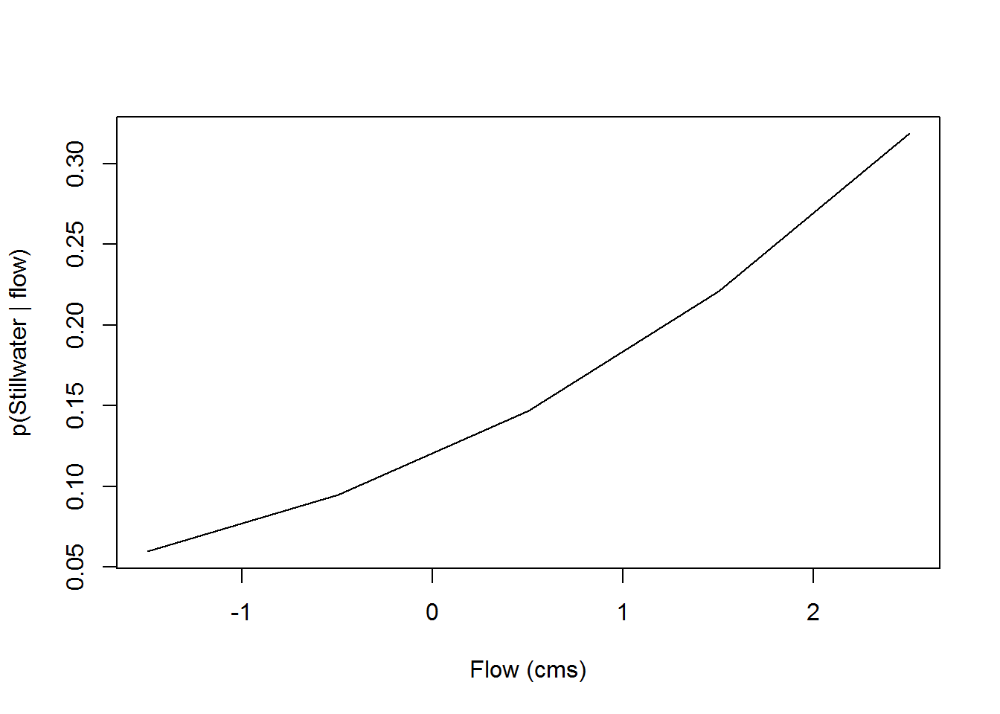
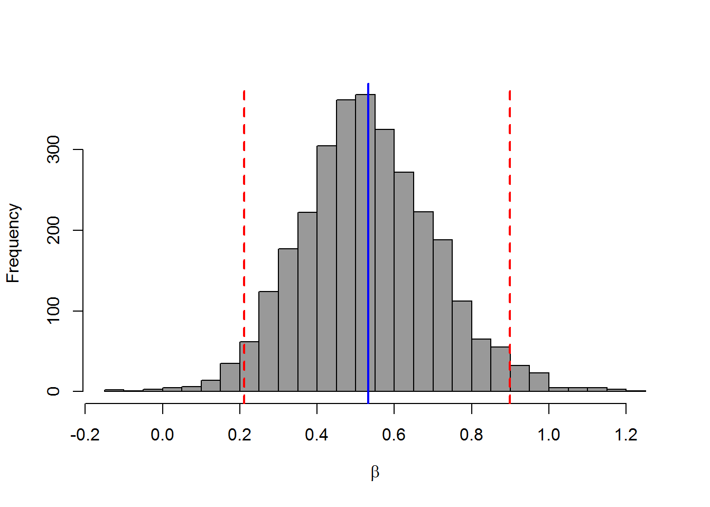
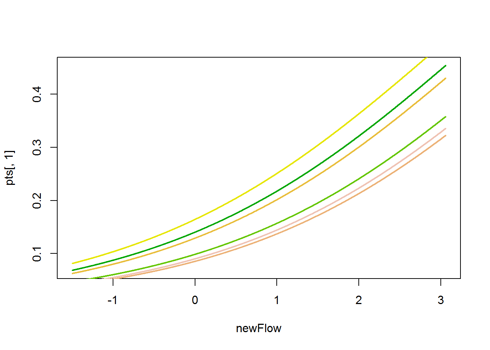
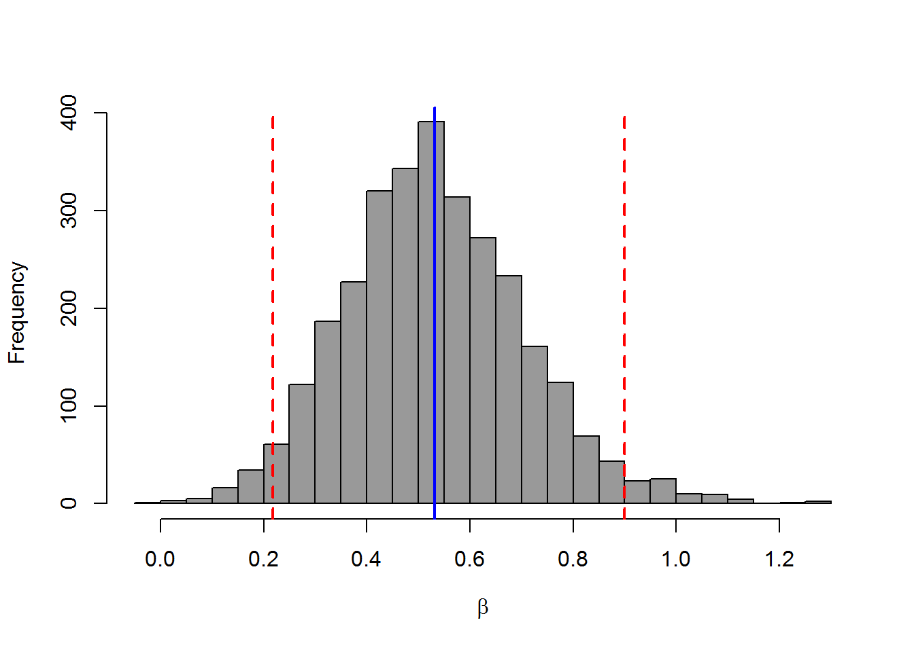
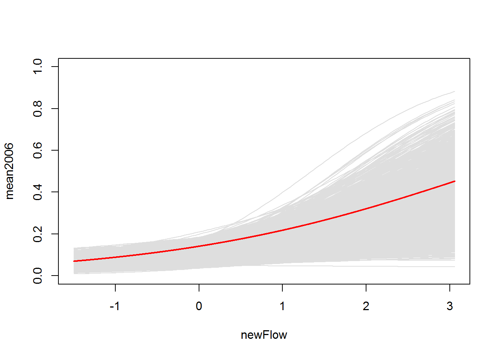
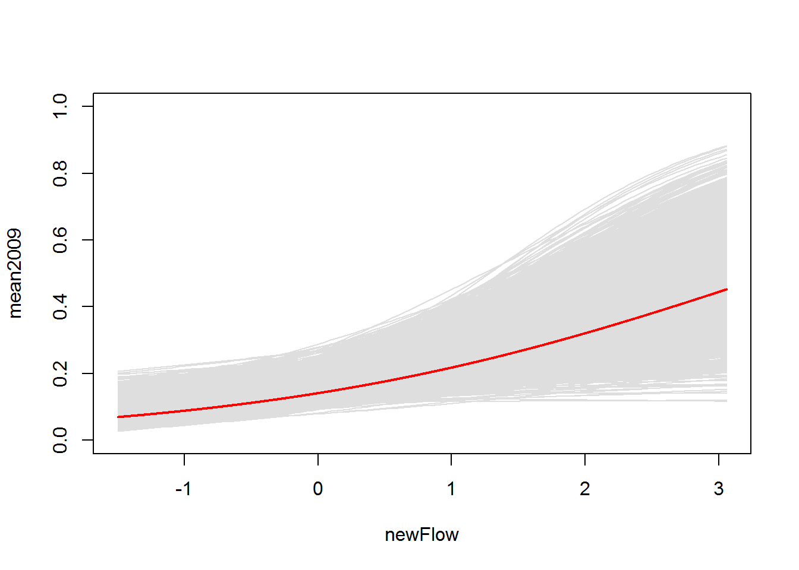
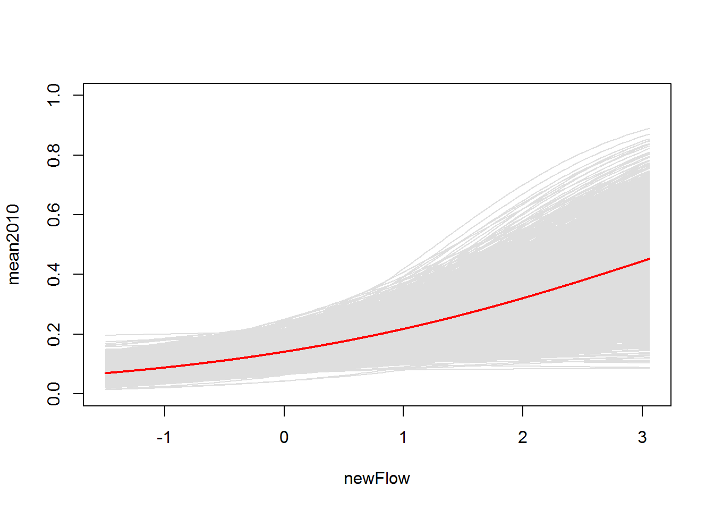
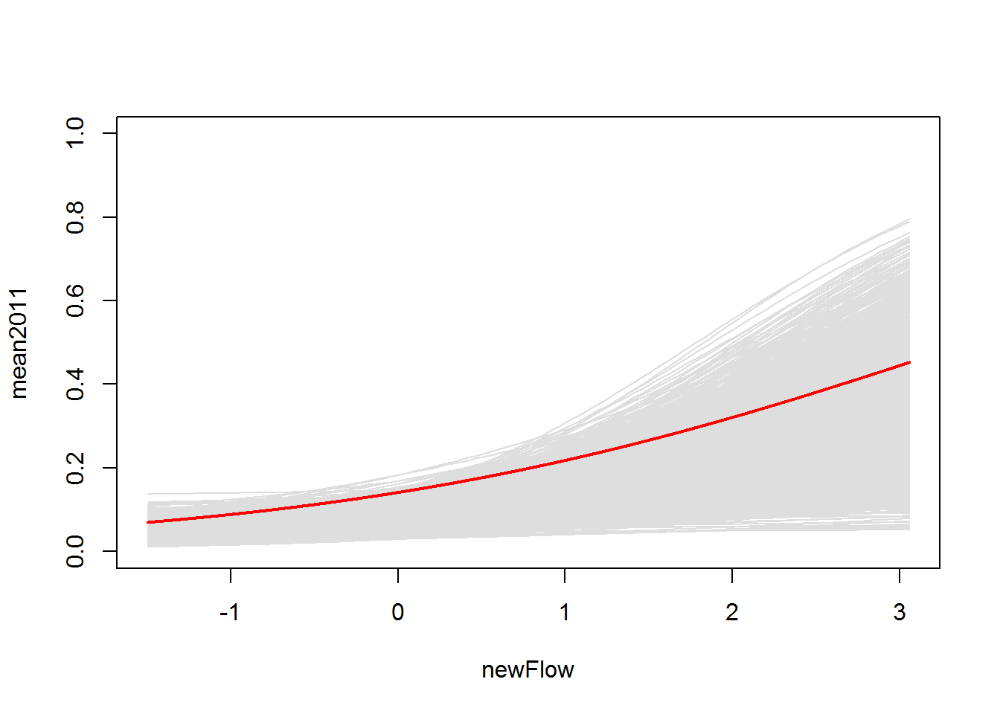
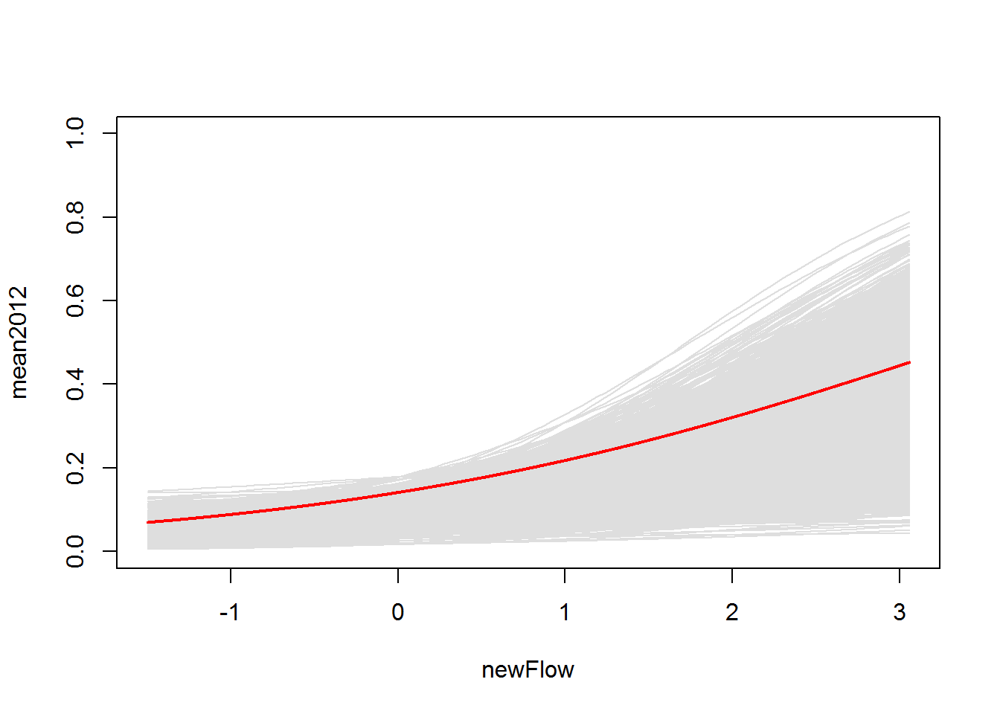

Generalized linear mixed models
Introducing the GLMM
This week, we will continue our discussions about mixed effects models and extend the linear mixed model (LMM) to include error distributions other than the normal. This should feel pretty familiar to the transition that we made from the general linear model (ANCOVA) to the generalized linear model (GLM) a few weeks ago (I know, it feels like it was only yesterday).
For our first example this week, we will use the same data from last week that we used to demonstrate binomial logistic regression. This time, we will add in a random intercept term that will allow us to account for repeated observations within a year. This has two implications: 1) it accounts for the fact that the years in which we conducted this study are random samples from a larger, unobserved population, and 2) it accounts for the heterogeneity of variance that theoretically might occur as a result of taking multiple, and variable, numbers of measurements within a given year- thereby reducing the overall error of the model and our associated parameter estimates (in theory).
Data explanation
Let’s start by reading in the data (copied and pasted from GLM lessons).
# Let's read in the smolt data set that we used last time
choice = read.csv('http://employees.oneonta.edu/stichds/data/StillwaterChoiceData.csv')
# Look at the first few rows of data
head(choice)## path year hatchery length mass date flow
## 1 0 2010 1 176 57 118 345
## 2 0 2005 1 205 101 128 1093
## 3 0 2010 1 180 56 118 345
## 4 0 2010 1 193 74 118 345
## 5 0 2005 1 189 76 128 1093
## 6 0 2010 1 180 65 118 345These data are from a study that examined factors affecting path choice by wild and hatchery-reared endangered Atlantic salmon smolts during seaward migration in the Penobscot River, Maine. State, local, and federal fishery managers were interested in understanding what factors affected migratory routing through the lower river because there were different numbers of dams, with different estimated smolt mortality rates, on either side of a large island hydropower project in this system. If managers could understand factors influencing migratory route, they might be able to manipulate flows, stocking dates, and dam operation to improve survival of these endangered fish. Furthermore, the results of the study were used to predict the effects of dam removal, and hydropower re-allocation in the lower river on population-level consequences for these fish. These data were part of a larger analysis:
Stich, D. S., M. M. Bailey, and J. D. Zydlewski. 2014. Survival of Atlantic salmon (Salmo salar) smolts through a hydropower complex. Journal of Fish Biology 85:1074-1096.
# The data consist of the following variables:
# path: The migratory route used by individual fish. The choices were
# main-stem of the river (0) or the Stillwater Branch (1) around the
# island.
# year: The year in which individual fish were tagged and relocated using
# acoustic telemetry.
# hatchery: An indicator describing if fish were reared in the wild (0) or in
# the federal conservation hatchery (1)
# length: Fish length (in mm)
# mass: Fish mass (in grams)
# date: Ordinal date on which the fish entered the hydrocomplex determined
# from time-stamps on acoustic receivers
# flow: Discharge recorded at the USGS gauge in the headpond of the dam
# several kilometers upstream of the hydropower complex.Data analysis
We are going to use the 1/0 binary data to estimate the effects of a number of covariates of interest on the probability that an individual fish used the Stillwater Branch for migration in each year of this study using logistic regression. In order to do this, we will use the ‘logit’ link function in both our REML and Bayesian approaches. This function can be defined as:
logit = function(x){
log(x / (1-x))
}
# The inverse of the logit function is:
invlogit = function(x){
exp(x) / (1 + exp(x))
}
# Since we are not interested in the linear trend in the use of the Stillwater
# Branch through time, we need to convert year to factor. This is the same as
# if we wanted to use this as a fixed effect in the model.
choice$year = as.factor(choice$year)REML Estimation
We will start by estimating the probability of using the Stillwater Branch using a GLMM in restricted maximum likelihood estimation (REML). For this example, we will define a set of candidate models representing different hypotheses. These are the actual models that were used for hypothesis testing in the citation given above.
Define a set of models based on a priori combinations of explanatory variables.
# Load the lme4 library
library(lme4)
# Scale the flow variable
choice$flow2 = c(scale(choice$flow, center=TRUE, scale=TRUE))
choice$length2 = c(scale(choice$length, center=TRUE, scale=TRUE))
# First, make an empty list to hold the models
mods=list()
# Now, fill the list with several a priori models
mods[[1]]=glmer(path~(1|year)+hatchery+length+flow,family=binomial,
data=choice)
mods[[2]]=glmer(path~(1|year)+flow2,family=binomial,data=choice)
mods[[3]]=glmer(path~(1|year)+hatchery,family=binomial, data=choice)
mods[[4]]=glmer(path~(1|year)+length,family=binomial, data=choice)
mods[[5]]=glmer(path~(1|year)+length+hatchery,family=binomial,data=choice)
mods[[6]]=glmer(path~(1|year)+length+flow2,family=binomial,data=choice)
mods[[7]]=glmer(path~(1|year)+hatchery+flow2,family=binomial,data=choice)Give the models some names using the formulas for each of the models. Remember: models are stored as list objects in R, and each of those list objects (models) has names. We can reference those names using the $ notation:
for(i in 1: length(mods)){
names(mods)[i] = as.character(summary(mods[[i]])$call$formula)[3]
}Now, we use the AICcmodavg package to make a model selection table like we did previously:
# Load the library
library(AICcmodavg)
# Do model selection and make a table
modtable = aictab( cand.set = mods, modnames = names(mods) )Finally, we can use these models to make predictions about the relationships in our models the same way we have done previously with linear models and GLMs.
# Start by making a new sequence of values from which to make predictions
newFlow = seq(min(choice$flow2), max(choice$flow2), 1)
# Let's go ahead and use the best model to make some predictions, as we
# can see that flow is the most important variable here
beta_0 = summary(mods[[2]])$coefficients[1,1]
beta_1 = summary(mods[[2]])$coefficients[2,1]
# Now, we can make predictions from this model-averaged estimate
preds = invlogit(beta_0 + beta_1*newFlow)
# Make a *quick* plot for data vis
plot(newFlow, preds, type='l', xlab='Flow (cms)', ylab='p(Stillwater | flow)')
Bayesian implementation
The other approach we could take is to model this as a hierarchical process using JAGS. The philosophical reasons for using this approach are essentially the same as above, but estimation as a hierarchical model allows us to ‘share’ information about the response between years. So, it looks like we don’t really have enough information to estimate the effects of year and flow separately in a single Bayesian regression model (too few independent observations within years), but we can share information across years to improve annual estimates of the probability of using the Stillwater Brance while simultaneously estimating the effect of flow. In general, this should result in better estimates for the covariate of interest. For ANCOVA (a.k.a. general linear models) or GLM in Bayesian inference this is really the approach we should take whenever we can, because we are assuming that all of our variables are drawn from random distributions for cases like this. This ‘hierarchical’ approach is essentially the Bayesian analogue to the GLMM in maximum likelihood estimation, but it is a little easier to interpret in my opinion.
First, let’s just re-define our variables so everything is in one place. Also note that here we standardize the covariate for flow.
ngroups = length(unique(choice$year))
N = nrow(choice)
year = as.numeric(as.factor(choice$year))
flow = c(scale(choice$flow, center=TRUE, scale=TRUE))Specify the model
modelstring="
model{
# Priors
for(i in 1:ngroups){
alpha[i] ~ dnorm(mu.int, tau.int) # Random intercepts
}
mu.int ~ dnorm(0, 0.001) # Mean hyperparameter for ran. intercepts
tau.int <- 1/(sigma.int*sigma.int) # Precision for random intercepts
sigma.int ~ dunif(0, 100) # SD hyperparameter for ran. intercepts
beta ~ dnorm(0, 0.001) # Common slope for beta
# Likelihood
for(i in 1:N){
y[i] ~ dbern(mu[i])
logit(mu[i]) <- alpha[year[i]] + beta*flow[i]
}
}
"
writeLines(modelstring, "choiceModel.txt")Make the data
# Package the data in a list for JAGS
jags.data <- list(
y = choice$path,
N = N,
year = year,
flow=flow,
ngroups=ngroups
)Define parameters for monitoring
# Specify the parameters we want to monitor
parameters = c("alpha", "beta", "mu.int", "sigma.int")Specify initial values
# Make a function to declare some initial values.
inits = function(){
list(
alpha = rnorm(ngroups, 0, 2),
beta = rnorm(1,1,1),
mu.int = rnorm(1,0,1),
sigma.int = rlnorm(1)
)
}Define MCMC settings for Gibbs sampler
# MCMC settings
ni <- 3300
nt <- 3
nb <- 300
nc <- 3Run the model
# Load the R2jags library
library(R2jags)
# Call JAGS from R and run the model
choice_glmm <- jags(jags.data, inits, parameters,
"choiceModel.txt", n.chains = nc, n.thin = nt, n.iter = ni,
n.burnin = nb, progress.bar = "none")Look at the results
# Print the model
print(choice_glmm$BUGSoutput$summary[ , c(1:3,7:9)])## mean sd 2.5% 97.5% Rhat n.eff
## alpha[1] -1.8110437 0.3255692 -2.41857196 -1.1552657 1.000966 3000
## alpha[2] -2.2110558 0.2940034 -2.85418112 -1.6795959 1.006103 530
## alpha[3] -1.6251195 0.2328094 -2.08806936 -1.1679660 1.001300 3000
## alpha[4] -1.9077333 0.2614235 -2.39829346 -1.3711794 1.001922 1400
## alpha[5] -2.3694961 0.3083907 -3.01098909 -1.8417460 1.001791 1600
## alpha[6] -2.3097154 0.3091971 -2.97971113 -1.7750849 1.003269 760
## beta 0.5321079 0.1742034 0.21071044 0.8989847 1.002343 1100
## deviance 558.0153436 3.7459742 552.70208563 566.5445372 1.001002 3000
## mu.int -2.0392871 0.2826074 -2.62676965 -1.5076433 1.002500 1000
## sigma.int 0.5354165 0.3458864 0.09500748 1.4260995 1.004270 560At a glance it is clear that this model has converged and we have effectively sampled the posterior distribution, even at a relatively low number of runs. If we wanted to, we could bump up our sampling intensity to get a few more estimates, but we won’t waste class time with that right now. Besides, we have pretty solid evidence that all of our parameters are well estimated.
If you have been paying close attention you are now noticing that our estimates for alpha[1:6] are NOT the same as the estimates in our GLM model in which p(Stillwater) was estimated separately for each year when we ran this as a fixed effects model (even if we do the logit transformation)!
# Invlogit
invlogit(
apply(
choice_glmm$BUGSoutput$sims.list$alpha, 2, mean
)
) ## [1] 0.14051204 0.09876206 0.16450004 0.12923572 0.08552854 0.09032153Why is that?
It’s because these are not slopes. They are random intercepts for each year that govern the relationship between flow and path choice! You’ll also notice that if you invert the logit link function that not all of the estimates are uniformally larger or smaller. This is a phenomenon known as ‘shrinkage’. Because we are sharing data across multiple levels of a random factor, the tendency is for the sampler to pull the mean of each level nearer to the overall mean for the sampling ‘universe’ that is being considered here:
invlogit(-2.037)## [1] 0.1153726If you’ve really been paying attention for the last few weeks, you’ll recall that this estimate is actually identical to the estimate from the original GLMM analysis that we pulled these data from…
\[M_{ind} == BLOWN\]
This can obviously have important implications for inference. If what you are truly interested in here is the effect of year (and not flow) then the first approach may be warranted. We, however, are interested in both, so we proceed.
Interpretting the results
First, let’s grab our posterior estimates
posts = choice_glmm$BUGSoutput$sims.listTake a look at the names of the sims list and then the structure of this list so you know what the heck is going on here.
names(posts) # We have 5 elements in our list## [1] "alpha" "beta" "deviance" "mu.int" "sigma.int"str(posts) # Notice that alpha is a matrix with six columns? Need that!## List of 5
## $ alpha : num [1:3000, 1:6] -1.52 -1.42 -2.15 -1.66 -2.3 ...
## $ beta : num [1:3000, 1] 0.451 0.549 0.584 0.375 0.389 ...
## $ deviance : num [1:3000, 1] 554 555 566 560 570 ...
## $ mu.int : num [1:3000, 1] -2.36 -2.03 -2 -2.26 -2.37 ...
## $ sigma.int: num [1:3000, 1] 0.899 0.218 0.162 0.475 0.236 ...The first parameter we will look at here is beta to determine the overall effect of flow. The interpretation of this coefficient, because it is standardized, is the change in the probability of using the Stillwater Branch across all years given a 1 standard deviation change in flow.
beta.post = posts$betaWe can see that the 95% HDI for beta does not include zero, so we can conclude that there is a significant effect of flow on path choice, and that increased flow is associated with increased probability of using the Stillwater Branch.
hist(beta.post, main='', col='gray60', xlab=expression(beta), breaks=25)
abline(v=mean(beta.post), col='blue', lty=1, lwd=2)
abline(v=quantile(beta.post, 0.025), col='red', lty=2, lwd=2)
abline(v=quantile(beta.post, 0.975), col='red', lty=2, lwd=2)
Now, we can actually look at the change in flow with respect to a given year calculate the probability of using the Stillwater Branch given year and some new values for beta.
rflow = max(flow)-min(flow)
newFlow = seq(min(flow), max(flow), by = rflow/length(beta.post))[1:length(beta.post)]
p2005 = invlogit(mean(posts$alpha[,1]) + mean(beta.post)*newFlow)
p2006 = invlogit(mean(posts$alpha[,2]) + mean(beta.post)*newFlow)
p2009 = invlogit(mean(posts$alpha[,3]) + mean(beta.post)*newFlow)
p2010 = invlogit(mean(posts$alpha[,4]) + mean(beta.post)*newFlow)
p2011 = invlogit(mean(posts$alpha[,5]) + mean(beta.post)*newFlow)
p2012 = invlogit(mean(posts$alpha[,6]) + mean(beta.post)*newFlow)
pts = data.frame(p2005, p2006, p2009, p2010, p2011, p2012)
plot(newFlow, pts[,1], type='l')
for(i in 1:ncol(pts)){
lines(newFlow, pts[ , i], col=terrain.colors(7)[i], lwd=2)
}
Of course, if we were trying to show the uncertainty in each of our estimates we might do something more along these “lines”..hahaha!
# 2005
mean2005 = invlogit(mean(posts$alpha[,1]) + mean(beta.post)*newFlow)
plot(newFlow, mean2005, type='l', col='white', ylim=c(0,1))
for(i in 1: length(beta.post)){
nFlow = seq(min(flow), max(flow), by = rflow/10)
alpha = sample(posts$alpha[ , 1], 1)
beta = sample(beta.post, 1)
p = invlogit(alpha + beta*nFlow)
lines(nFlow, p, col='gray87')
}
box()
lines(newFlow, mean2005, type='l', col='red', lwd=2)
# 2006
mean2006 = invlogit(mean(posts$alpha[,1]) + mean(beta.post)*newFlow)
plot(newFlow, mean2006, type='l', col='white', ylim=c(0,1))
for(i in 1: length(beta.post)){
nFlow = seq(min(flow), max(flow), by = rflow/100)
alpha = sample(posts$alpha[ , 2], 1)
beta = sample(beta.post, 1)
p = invlogit(alpha + beta*nFlow)
lines(nFlow, p, col='gray87')
}
box()
lines(newFlow, mean2006, type='l', col='red', lwd=2)
# 2009
mean2009 = invlogit(mean(posts$alpha[,1]) + mean(beta.post)*newFlow)
plot(newFlow, mean2009, type='l', col='white', ylim=c(0,1))
for(i in 1: length(beta.post)){
nFlow = seq(min(flow), max(flow), by = rflow/100)
alpha = sample(posts$alpha[ , 3], 1)
beta = sample(beta.post, 1)
p = invlogit(alpha + beta*nFlow)
lines(nFlow, p, col='gray87')
}
box()
lines(newFlow, mean2009, type='l', col='red', lwd=2)
# 2010
mean2010 = invlogit(mean(posts$alpha[,1]) + mean(beta.post)*newFlow)
plot(newFlow, mean2010, type='l', col='white', ylim=c(0,1))
for(i in 1: length(beta.post)){
nFlow = seq(min(flow), max(flow), by = rflow/100)
alpha = sample(posts$alpha[ , 4], 1)
beta = sample(beta.post, 1)
p = invlogit(alpha + beta*nFlow)
lines(nFlow, p, col='gray87')
}
box()
lines(newFlow, mean2010, type='l', col='red', lwd=2)
# 2011
mean2011 = invlogit(mean(posts$alpha[,1]) + mean(beta.post)*newFlow)
plot(newFlow, mean2011, type='l', col='white', ylim=c(0,1))
for(i in 1: length(beta.post)){
nFlow = seq(min(flow), max(flow), by = rflow/100)
alpha = sample(posts$alpha[ , 5], 1)
beta = sample(beta.post, 1)
p = invlogit(alpha + beta*nFlow)
lines(nFlow, p, col='gray87')
}
box()
lines(newFlow, mean2011, type='l', col='red', lwd=2)
# 2012
mean2012 = invlogit(mean(posts$alpha[,1]) + mean(beta.post)*newFlow)
plot(newFlow, mean2012, type='l', col='white', ylim=c(0,1))
for(i in 1: length(beta.post)){
nFlow = seq(min(flow), max(flow), by = rflow/100)
alpha = sample(posts$alpha[ , 6], 1)
beta = sample(beta.post, 1)
p = invlogit(alpha + beta*nFlow)
lines(nFlow, p, col='gray87')
}
box()
lines(newFlow, mean2012, type='l', col='red', lwd=2)
Some of you may have noticed that the slope of lines does not change in this example. We could, of course implement this change in our model, and this essentially becomes the equivelant of adding an interaction term to our model.
modelstring="
model{
# Priors
for(i in 1:ngroups){
alpha[i] ~ dnorm(mu.int, tau.int) # Random intercepts
beta[i] ~ dnorm(mu.beta, tau.beta) # Random slopes
}
mu.int ~ dnorm(0, 0.001) # Mean hyperparameter for ran. intercepts
tau.int <- 1/(sigma.int*sigma.int) # Precision for random intercepts
sigma.int ~ dunif(0, 100) # SD hyperparameter for ran. intercepts
mu.beta ~ dnorm(0, 0.001) # Mean hyperparameter for ran. slopes
tau.beta <- 1/(sigma.int*sigma.int) # Precision for random slopes
sigma.beta ~ dunif(0, 100) # SD hyperparameter for ran. slopes
# Likelihood
for(i in 1:N){
y[i] ~ dbern(mu[i])
logit(mu[i]) <- alpha[year[i]] + beta[year[i]]*flow[i]
}
}
"
writeLines(modelstring, "glmm.model2.txt")
# Package the data in a list for JAGS
jags.data <- list(
y = choice$path,
N = N,
year = year,
flow=flow,
ngroups=ngroups
)
# Specify the parameters we want to monitor
parameters = c("alpha", "beta", "mu.int", "sigma.int", "mu.beta",
"sigma.beta")
# Make a function to declare some initial values.
inits = function(){
list(
alpha = rnorm(ngroups, 0, 2),
beta = rnorm(ngroups, 1, 1),
mu.int = rnorm(1,0,1),
mu.beta = rnorm(1,0,1),
sigma.int = rlnorm(1),
sigma.beta = rlnorm(1)
)
}
# MCMC settings
ni <- 3300
nt <- 3
nb <- 300
nc <- 3 # Call JAGS from R and run the model
choice_glmm <- jags(jags.data, inits, parameters,
"glmm.model2.txt", n.chains = nc, n.thin = nt, n.iter = ni,
n.burnin = nb, progress.bar = "none")
# Print the model
print(choice_glmm, digits=3)Notice that this one takes a little longer to run, but now we can essentially make the same predictions that we did before and the rest of our estimated parameters are essentially identical to the values we got previously.
Let’s have a quick look at the output
posts = choice_glmm$BUGSoutput$sims.list
names(posts) # We have 7 elements in our list now## [1] "alpha" "beta" "deviance" "mu.beta" "mu.int"
## [6] "sigma.beta" "sigma.int" str(posts) # Notice that alpha AND betas are matrices now?## List of 7
## $ alpha : num [1:3000, 1:6] -0.62 -2.22 -2 -2.38 -1.68 ...
## $ beta : num [1:3000, 1:6] 0.267 0.624 0.356 0.602 0.537 ...
## $ deviance : num [1:3000, 1] 558 569 565 557 556 ...
## $ mu.beta : num [1:3000, 1] 1.305 0.682 0.437 0.718 0.663 ...
## $ mu.int : num [1:3000, 1] -2.41 -2.68 -1.99 -2.03 -1.71 ...
## $ sigma.beta: num [1:3000, 1] 48.12 86.17 9.82 35.75 58.42 ...
## $ sigma.int : num [1:3000, 1] 1.171 0.42 0.134 0.221 0.276 ... # Calculate the probability of using the Stillwater Branch given year and
# some new values for beta
rflow = max(flow)-min(flow)
newFlow = seq(min(flow), max(flow), by = rflow/length(beta.post))[1:length(beta.post)]
p2005 = invlogit(mean(posts$alpha[,1]) + mean(posts$beta[,1])*newFlow)
p2006 = invlogit(mean(posts$alpha[,2]) + mean(posts$beta[,1])*newFlow)
p2009 = invlogit(mean(posts$alpha[,3]) + mean(posts$beta[,1])*newFlow)
p2010 = invlogit(mean(posts$alpha[,4]) + mean(posts$beta[,1])*newFlow)
p2011 = invlogit(mean(posts$alpha[,5]) + mean(posts$beta[,1])*newFlow)
p2012 = invlogit(mean(posts$alpha[,6]) + mean(posts$beta[,1])*newFlow)
pts = data.frame(p2005, p2006, p2009, p2010, p2011, p2012)
plot(newFlow, pts[,1], type='l')
for(i in 1:ncol(pts)){
lines(newFlow, pts[ , i], col=terrain.colors(7)[i], lwd=2)
}
So, not much evidence for an interaction in this case, which, given the biology of this species and the potential mechanisms by which flow might influence path choice, is exactly what we would expect to see!
This work is licensed under a Creative Commons Attribution 4.0 International License.